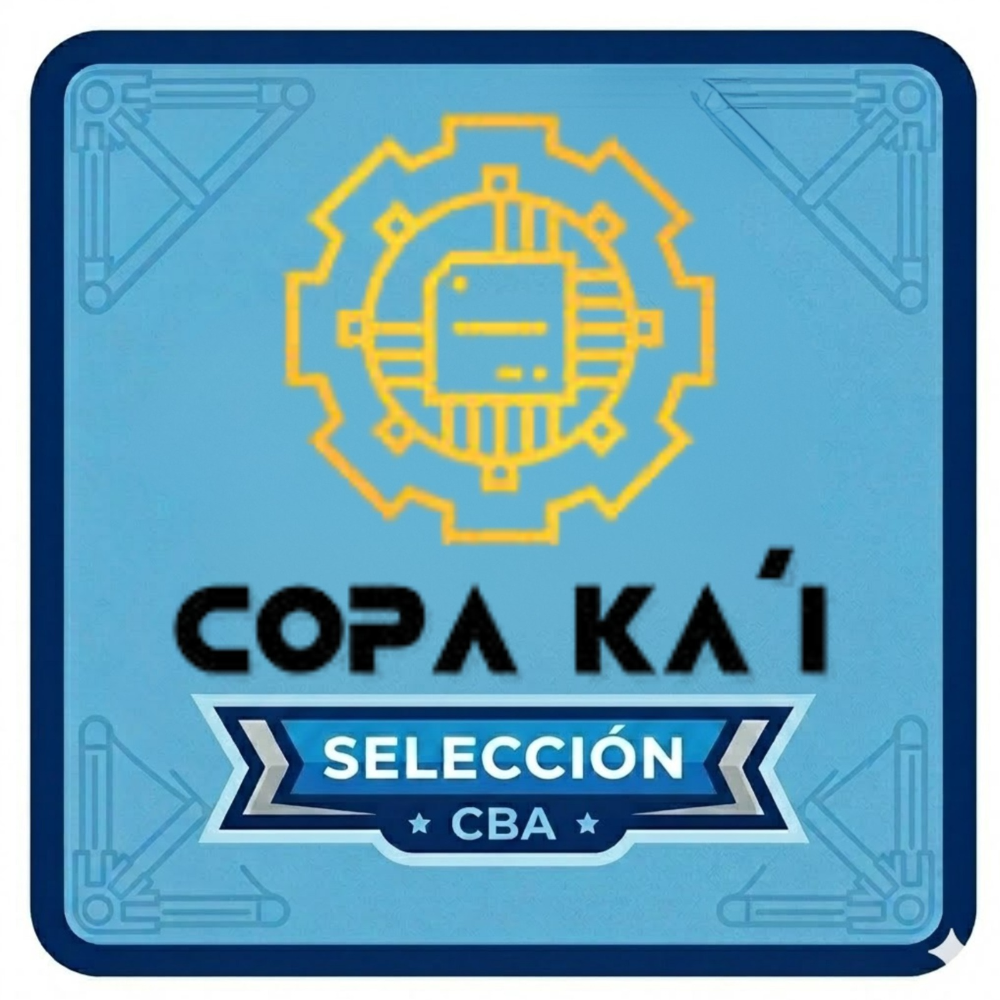
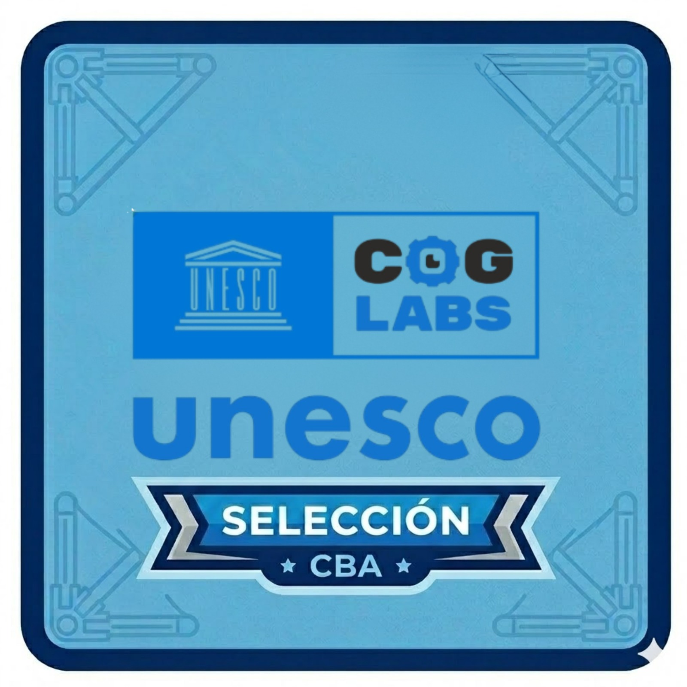
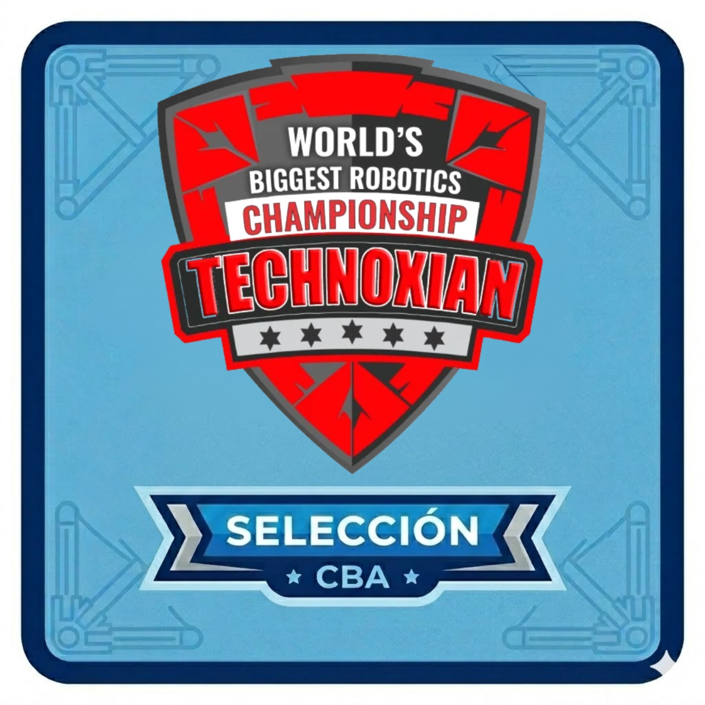
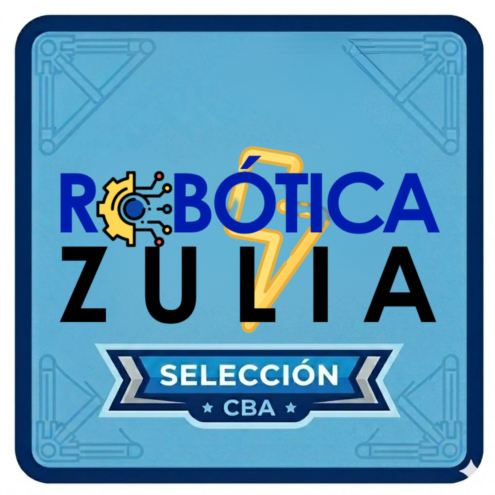
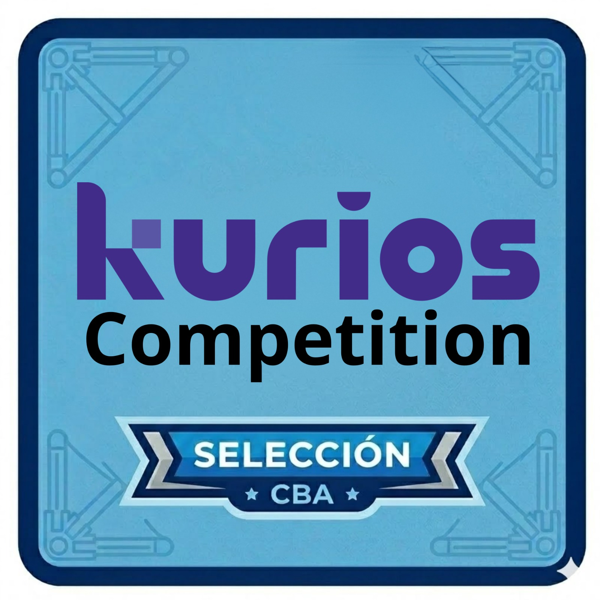
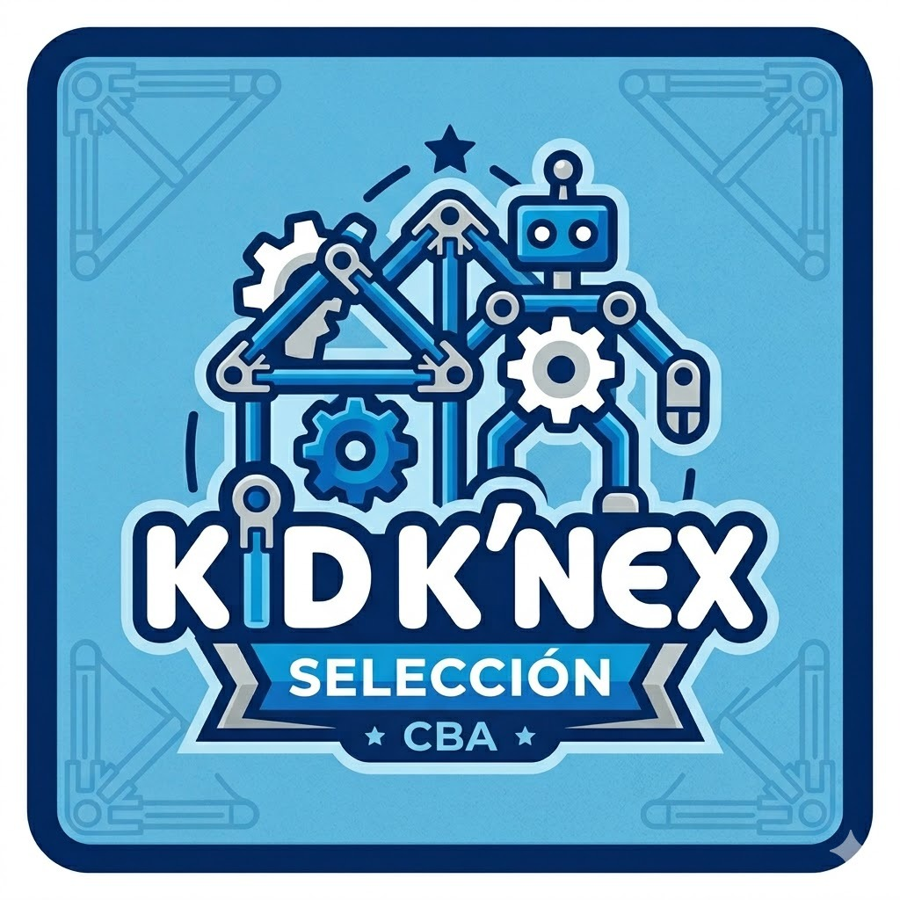
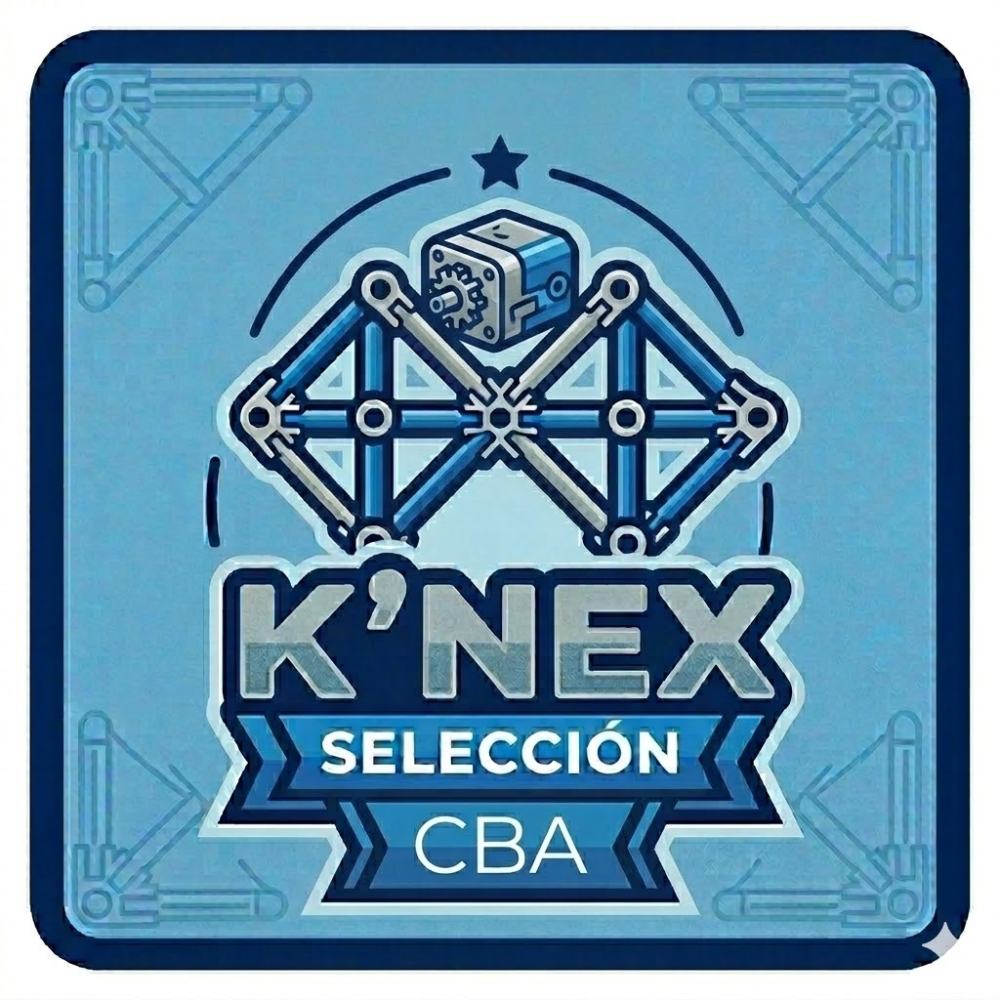
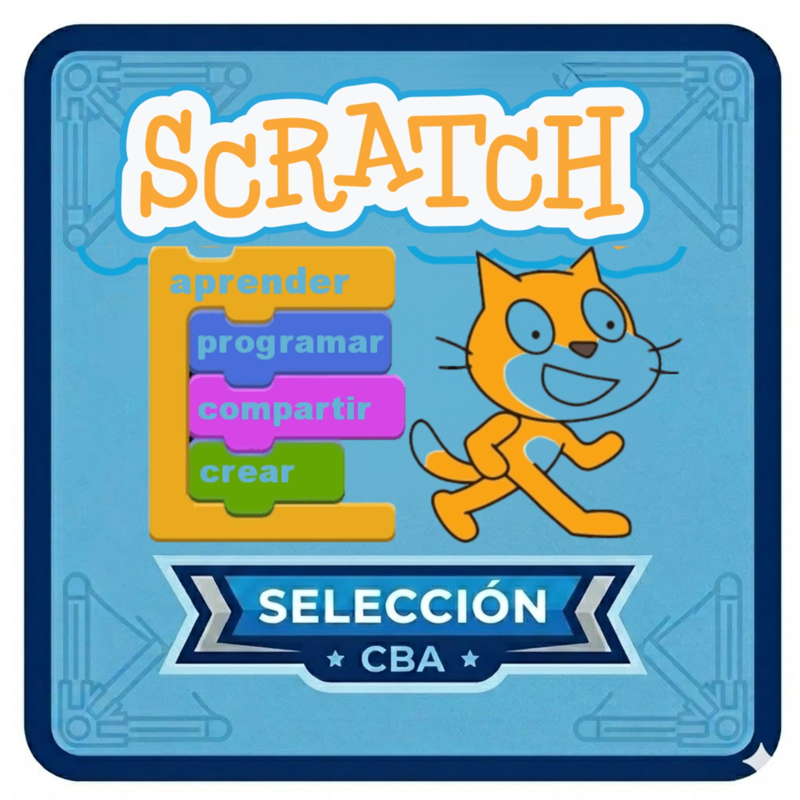
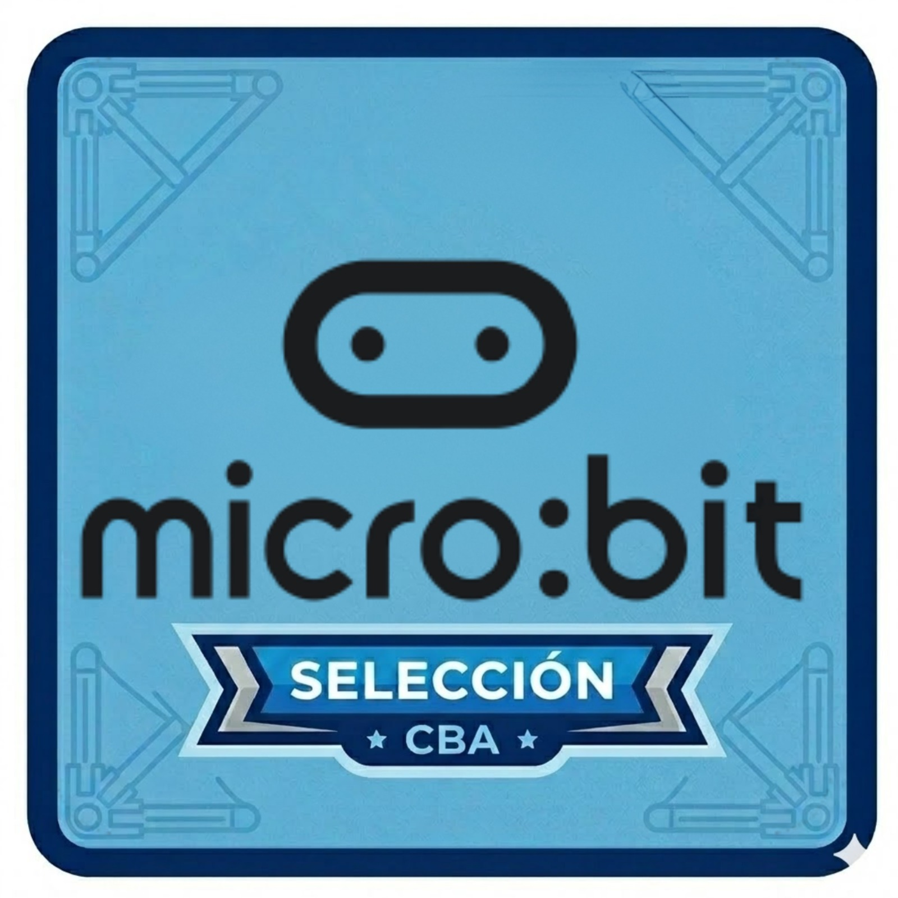
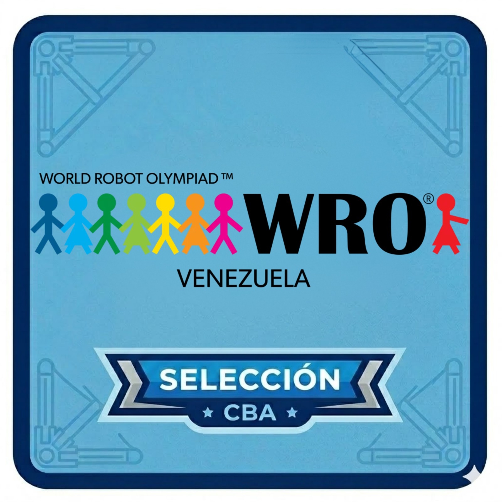

TEAM BELLAS ARTES BOTS
Academia de Robótica · CBA
📋 Reserva tu Cupo

"Programa tu mundo, construye tu futuro."
Un equipo multidisciplinario de especialistas en educación tecnológica e ingeniería, comprometidos con la excelencia académica del Colegio Bellas Artes.
Somos una Academia de Robótica y Programación de Alto Rendimiento conformada por un equipo multidisciplinario de especialistas en ingeniería y educación tecnológica. Con sede en el Colegio Bellas Artes de Maracaibo, fusionamos la lógica computacional con la construcción mecánica y la creatividad artística. Contamos con docentes expertos en logística, construcción LEGO, programación avanzada y coaching para competencias internacionales.
Formamos niños y jóvenes, a partir de los 4 años, en el dominio de las tecnologías emergentes.
Usamos la robótica y la programación para potenciar el pensamiento crítico, la resolución de problemas y el trabajo colaborativo.
Democratizamos el acceso a la educación en Ciencia, Tecnología, Ingeniería, Arte y Matemáticas.
Garantizamos un ambiente seguro, moderno y alineado con los estándares globales de competencia tecnológica.
Convertirnos en la academia de robótica de referencia en el estado Zulia y en toda Venezuela, destacando por la excelencia de nuestros equipos en encuentros nacionales e internacionales. Aspiramos a ser un centro de innovación donde los estudiantes evolucionen desde la construcción manual básica hasta el desarrollo de algoritmos complejos, adquiriendo las competencias necesarias para liderar la transformación digital del futuro.
Esta guía detalla la oferta educativa tecnológica dividida por niveles, desde la iniciación en preescolar hasta el desarrollo de habilidades complejas en programación y robótica para niños mayores de 8 años, especificando tiempos y herramientas.
2 horas semanales centradas en el uso de Legos y herramientas de dibujo como Paint.
3 horas semanales de lunes a jueves enfocadas en Legos y trabajo en equipo.
4 horas semanales utilizando herramientas como Lego Spike, Microbit y Scratch.
Sesiones de lunes a jueves (4:00 a 6:00 p.m.). Un viernes al mes haremos actividades especiales para todos (juegos, competencias o talleres de integración).
Un sistema educativo estructurado en tres fases que garantiza que cada alumno tenga un propósito, progrese a su ritmo y nunca deje de competir. Adicionalmente, contamos con actividades especiales los viernes para toda la comunidad.
Familiarizamos a los estudiantes con los kits de hardware y entornos de programación, desarrollando el pensamiento lógico y la motricidad.
Conformación de todas las delegaciones oficiales que representarán a la institución en competencias externas de alto nivel.
Ningún alumno se queda sin competir. La Preselección de Robótica tiene su propio circuito competitivo anual con ascenso dinámico a la selección principal.
Una progresión diseñada cuidadosamente para acompañar el desarrollo cognitivo de cada estudiante desde la primera infancia hasta la competencia internacional.

Iniciación Tecnológica
2 horas semanales
Primeros pasos en robótica y tecnología. Los pequeños construyen, exploran y desarrollan pensamiento lógico a través del juego creativo.

Pensamiento Algorítmico
3 – 4 horas semanales
Construcción mecánica y primeros pasos en programación. Aprenden a crear estructuras y dar instrucciones a la computadora.

Hardware Avanzado y WRO
4 horas semanales
Robótica autónoma con sensores y motores. Programan robots que reaccionan al entorno y compiten en torneos.

Alta Especialización
4 horas semanales
Proyectos de ingeniería complejos, sensores avanzados e iniciación al Internet de las Cosas. Preparación competitiva WRO.

Arquitectura y Python
4 horas semanales
Programación en Python, domótica y arquitectura de sistemas robóticos. Preparación de alto nivel para competencias nacionales e internacionales.

I+D e IA Profesional
4 horas semanales
Investigación aplicada, IA y código avanzado. El nivel élite que lidera al equipo en competencias internacionales y mentoría de niveles inferiores.
Distribución de herramientas y actividades según el grado escolar.
Lunes a Jueves · 4:00 pm – 6:00 pm
Nuestros equipos participan en las competencias de robótica más importantes a nivel regional, nacional e internacional.

Copa Ka’í
UNESCO · COG Labs
Technoxian
Robótica Zulia
Kurios WRO
WRO
Cada selección representa un equipo especializado en una herramienta tecnológica, con su propia ruta de competencias a lo largo del año.

Construcción estructural para los más pequeños (4–6 años). Desarrollan motricidad fina, pensamiento espacial y trabajo en equipo.

Ingeniería y construcción avanzada (1er–4to grado). Diseño de estructuras complejas con retos de velocidad y resistencia.

Programación visual y creación de proyectos interactivos. Los alumnos desarrollan animaciones, juegos y simulaciones con Scratch.

Electrónica, sensores y programación física. Los alumnos crean dispositivos inteligentes y soluciones tecnológicas reales.
Robótica avanzada con motores y sensores inteligentes. Programación en bloques y Python para construir robots autónomos.
Proyectos de investigación e innovación tecnológica. Los alumnos identifican problemas reales y proponen soluciones creativas con tecnología.
Especialistas apasionados que combinan experiencia pedagógica con conocimiento técnico de vanguardia.

🔧 Construcción Mecánica y Logística
Especialista en construcción mecánica con K-Nex y LEGO. Coordina la logística del laboratorio y los recursos didácticos de la academia.

💻 Programación y Bases Teóricas
Docente de programación con dominio de Scratch, Micro:bit y fundamentos de pensamiento computacional. Diseña el currículo teórico de cada nivel.

💡 Asesor de Proyectos de Innovación
Especialista en el desarrollo de proyectos de innovación tecnológica aplicando robótica educativa. Acompaña a los estudiantes en la identificación de problemas reales y la creación de soluciones creativas con herramientas tecnológicas.

⚙️ Programador y Armador de Prototipos
Ingeniero con sólida formación técnica especializado en programación aplicada y construcción de prototipos robóticos. Traduce ideas en soluciones físicas funcionales, guiando a los estudiantes desde el código hasta el ensamblaje final del robot.
🏆 Dirección Técnica · ⚙️ Programación WRO
Director técnico del equipo de alto rendimiento y especialista en Python con LEGO Spike Prime. Lidera la estrategia competitiva y el desarrollo de código para la World Robot Olympiad.
Transparencia total en costos y horarios. Invierte en el futuro tecnológico de tu hijo.